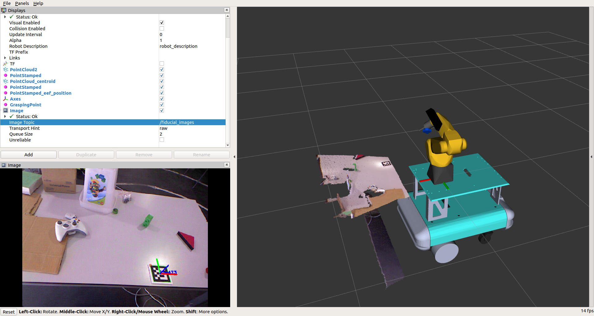

Decidiu-se que o Robonuc iria ter 4 modos de funcionamento: Modo 0 para o modo off; Modo 1 para Navegação (manipulador recolhido); Modo 2 para aproximação “automatica” da mesa para executar o Bin-Picking; Modo 3 para orientação da plataforma móvel face à bancada ; Modo 4 para iniciar o Bin-Picking. Para implementar esses modos, foi necessário criar um servidor de ações, em que dependendo do “goal” pedido pelo cliente, o servidor executa movimentos do manipulador Fanuc para posições predefinidas em cada modo. Depois de algumas tentativas de implementação das funções do Moveit em c++, achou-se por bem utilizar essas mesmas funções em python. Deste modo, o próprio servidor de ações teria, também, de ser em python. A dificuldade de implementação de ações, com o uso de uma nova linguagem dificultou um pouco esse processo. Após este servidor estar funcional, foi necessario alterar o nó “integrated_referee” para este ser um cliente de ações, e assim comutar o estado do manipulador consoante a tarefa necessária.
Deste modo a partir do momento em que o tele operador pressiona a tecla A, o ROBONUC procura uma superfície com base no laser 1D localizado na sua junta 6. Após essa deteção posiciona-se de modo automático para posterior correção da orientação da plataforma face a mesa. Este processo pode ser visualizado no seguinte vídeo:
Assim sendo, iniciei um nova etapa do projeto: correção da orientação da plataforma usando a câmara e um aruco. Para melhor perceção apresenta-se a seguinte seguinte imagem do estado atual do projeto:
